Manual · version 0.1.0
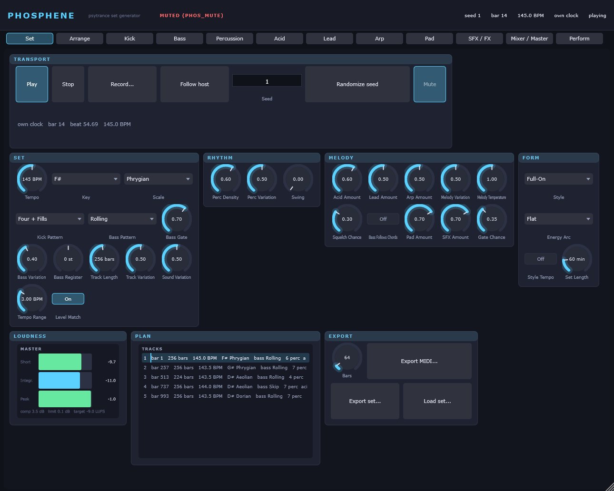
614 parameters · 12 tabs · 4 perform macros · every picture in this manual is the plugin drawing itself at design size
Phosphene composes and plays complete psytrance sets. You give it a seed, a style and an energy arc; it writes the tracks -- their keys, tempi, forms, patterns and sounds -- and synthesises them in real time. There is no sample library and no loop pool: every sound is made by the engine, and every note is decided by the composer.
Two ideas run through the whole instrument. The first is that the same seed always gives the same set: bar 3000 is bar 3000 whether the night was played from the start or joined in the middle, which is what makes a set something you can save in seven lines of text and hand to someone else. The second is that the composer never writes a knob. It writes offsets from the knobs, so with every offset at zero the instrument sounds exactly as the panel says, and a variation keeps its musical size whatever you have set the ranges to.
The panel has a tab per generator, plus four that are about the set rather than the sound: Set, Arrange, Mixer / Master and Perform. Every control on every page is generated from the engine's own parameter tables, and so is this manual.
The Set tab is where a night begins. The seed names the set; Randomize seed draws another one. Play and Stop run Phosphene's own clock, and Follow host hands the transport to the DAW instead -- under a host the tempo knob follows the host's tempo and the play head follows its position.
Starting a set is not instant. Planning a track measures its loudness by rendering two bars of it, so the first sound arrives about two seconds after the button; the header says "planning" rather than going quiet without explanation. In the standalone this has usually happened before you press anything, because the composer thread starts working when the window opens.
The composer's own knobs are here: how long a track is, how far the key and tempo may wander, how much of each voice there is, which style profile weights the grammar, which dramaturgy the energy arc follows and how long the whole set should be. The first track of a set plays exactly these knobs; variation starts with the second.
Export MIDI writes the score of the first N bars as a Standard MIDI File with a named track per part, section markers and the tempo map. Export set writes a .phosset -- the seed, the style, the arc, the knobs that differ from their defaults, and every lock and reroll -- which phos_render will play back byte for byte.
| Control | Key | Range | Default |
|---|---|---|---|
| Tempo | compose.bpm | 100 .. 190 BPM | 145 |
| Key | compose.key | C | C# | D | D# | E | F | F# | G | G# | A | A# | B | F# |
| Scale | compose.scale | Aeolian | Phrygian | Harmonic Minor | Phrygian Dominant | Double Harmonic | Dorian | Phrygian |
| Kick Pattern | compose.kick_pattern | Four | Four + Fills | Off | Four + Fills |
| Bass Pattern | compose.bass_pattern | Rolling | Gallop | Skip | Offbeat | Triplet | Rolling |
| Bass Gate | compose.bass_gate | 0.2 .. 1 | 0.7 |
| Bass Variation | compose.bass_variation | 0 .. 1 | 0.4 |
| Bass Register | compose.bass_register | -12 .. 12 st | 0 |
| Track Length | compose.track_bars | 32 .. 512 bars | 256 |
| Track Variation | compose.track_variation | 0 .. 1 | 0.5 |
| Sound Variation | compose.sound_variation | 0 .. 1 | 0.5 |
| Tempo Range | compose.tempo_range | 0 .. 10 BPM | 3 |
| Level Match | compose.level_match | off / on | on |
| Control | Key | Range | Default |
|---|---|---|---|
| Perc Density | compose.perc_density | 0 .. 1 | 0.6 |
| Perc Variation | compose.perc_variation | 0 .. 1 | 0.5 |
| Swing | compose.swing | 0 .. 0.3 | 0 |
| Control | Key | Range | Default |
|---|---|---|---|
| Acid Amount | compose.acid_amount | 0 .. 1 | 0.6 |
| Lead Amount | compose.lead_amount | 0 .. 1 | 0.5 |
| Arp Amount | compose.arp_amount | 0 .. 1 | 0.5 |
| Melody Variation | compose.melody_variation | 0 .. 1 | 0.5 |
| Melody Temperature | compose.melody_temperature | 0.5 .. 2 | 1 |
| Squelch Chance | compose.squelch_chance | 0 .. 1 | 0.3 |
| Bass Follows Chords | compose.bass_follows_chords | off / on | off |
| Pad Amount | compose.pad_amount | 0 .. 1 | 0.7 |
| SFX Amount | compose.sfx_amount | 0 .. 1 | 0.7 |
| Gate Chance | compose.gate_chance | 0 .. 1 | 0.35 |
| Control | Key | Range | Default |
|---|---|---|---|
| Style | compose.style | Goa | Full-On | Progressive | Dark Forest | Hi-Tech | Full-On |
| Energy Arc | compose.arc | Warm-up | Peak-Time | Morning | Closing | Flat | Flat |
| Style Tempo | compose.style_tempo | off / on | off |
| Set Length | compose.set_minutes | 10 .. 300 min | 60 |
The Arrange tab is the whole planned set on one page, and the curation loop that goes with it.
The strip across the top is the night: every planned track a block in the order it plays, the energy arc drawn over it, the play head in it. Underneath, each track gets a row of its own in which its own form fills the full width, so a section stays readable no matter how long the set is. The colours are the section categories: intro and outro grey, groove green, buildup amber, the pre-drop break violet, the drop red, the breakdown blue. Clicking any block jumps there.
The two small glyphs on every track and every section are the answer to the oldest complaint about generators, which is that they are boring. The padlock freezes that unit on the seed it has; the die draws it again. Because a locked unit keeps its old seed and nothing later reads anything an earlier one decided, rerolling one track leaves every other track bit-identical -- so you can keep what you like and reroll what you do not, one section at a time, until the set is yours. Reroll the set draws the whole journey again and leaves the locked tracks exactly where they were.
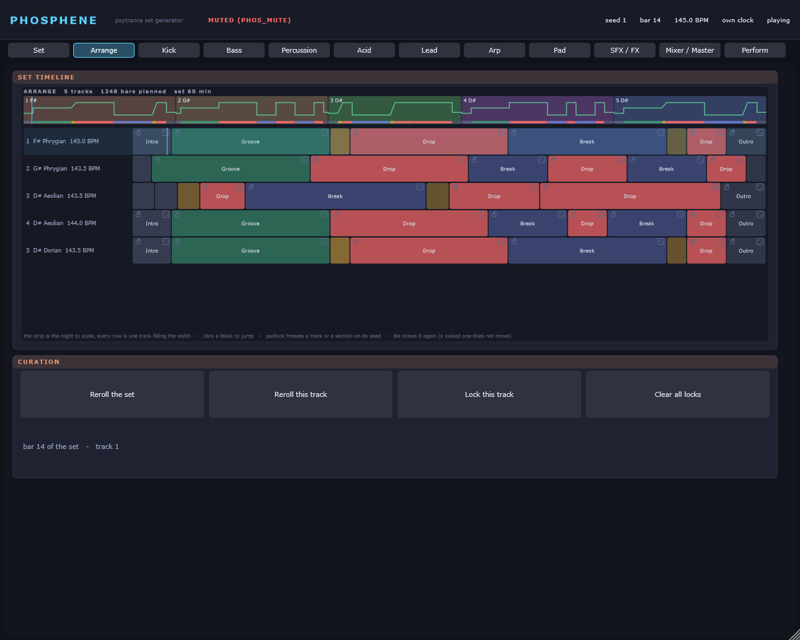
The kick is the floor of the genre and the first thing to get right. Two engines: a swept sine whose pitch falls from Pitch Start to Pitch End with its own decay, and a damped phasor resonator with the retrigger behaviour of a TR-808. Punch is a second, much faster pitch envelope on top of the first; Click adds the attack transient; Drive and Clip decide how much of the body survives.
Two of its numbers are not free. The tail is limited so that the kick has fallen far enough by the time the first bass note starts, and the phase lock (on the Bass tab) can trim the kick's decay so that the kick and the bass fundamental meet in phase. Both are applied in the engine, after every knob and every variation.
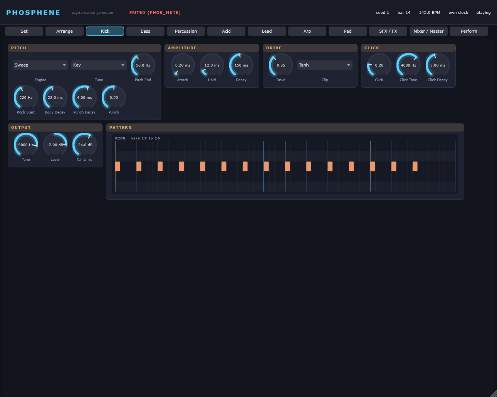
| Control | Key | Range | Default |
|---|---|---|---|
| Engine | kick.engine | Sweep | Resonant | Sweep |
| Tune | kick.tune | Free | Key | Key |
| Pitch End | kick.pitch_end | 30 .. 120 Hz | 50 |
| Pitch Start | kick.pitch_start | 60 .. 1500 Hz | 220 |
| Body Decay | kick.pitch_decay | 5 .. 150 ms | 22 |
| Punch Decay | kick.punch_decay | 0.5 .. 20 ms | 4 |
| Punch | kick.punch | 0 .. 1 | 0.5 |
| Control | Key | Range | Default |
|---|---|---|---|
| Attack | kick.amp_attack | 0 .. 10 ms | 0.2 |
| Hold | kick.amp_hold | 0 .. 150 ms | 12 |
| Decay | kick.amp_decay | 20 .. 1500 ms | 150 |
| Control | Key | Range | Default |
|---|---|---|---|
| Drive | kick.drive | 0 .. 1 | 0.35 |
| Clip | kick.clip | Tanh | Hard | Tanh |
| Control | Key | Range | Default |
|---|---|---|---|
| Click | kick.click_level | 0 .. 1 | 0.2 |
| Click Tone | kick.click_tone | 500 .. 12000 Hz | 4000 |
| Click Decay | kick.click_decay | 0.5 .. 30 ms | 3 |
| Control | Key | Range | Default |
|---|---|---|---|
| Tone | kick.tone | 200 .. 20000 Hz | 9000 |
| Level | kick.level | -36 .. 6 dB | -2 |
| Tail Limit | kick.tail_limit | -60 .. 0 dB | -24 |
The rolling bass and the kick are one instrument with two halves. The oscillator is a PolyBLEP saw and pulse with a sine sub on the fundamental -- on the fundamental, not an octave down, because the octave-down sub fought the kick -- and the filter is a non-linear zero-delay ladder.
Kick Lock decides which of the two gives way: Bass follows kick sets the bass start phase to the kick's phase at that instant, Kick follows bass trims the kick's decay by bisection until the two agree. Off leaves them where they fall, which at 145 BPM means anything between -157 and +165 degrees.
Pattern and Gate are the note side: which of the five bass patterns the track prefers, and how long a note is as a fraction of its slot. The gate is never allowed to run shorter than half a period of the fundamental.
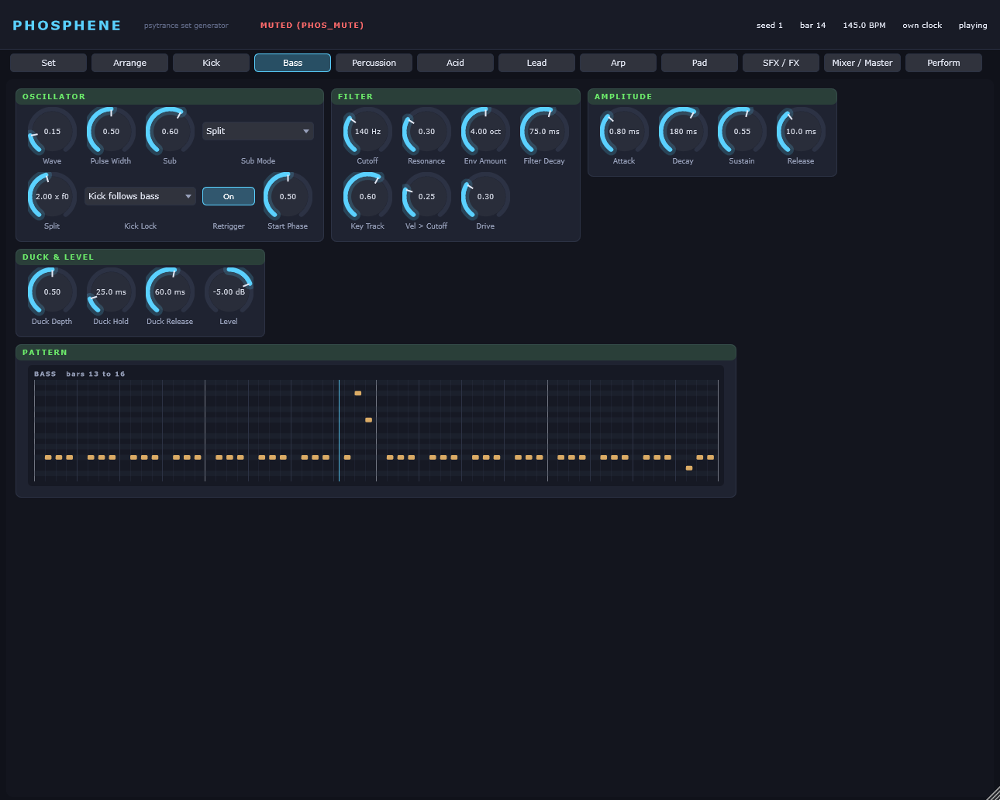
| Control | Key | Range | Default |
|---|---|---|---|
| Wave | bass.wave | 0 .. 1 | 0.15 |
| Pulse Width | bass.pulse_width | 0.05 .. 0.95 | 0.5 |
| Sub | bass.sub | 0 .. 1 | 0.6 |
| Sub Mode | bass.sub_mode | Mixed | Split | Split |
| Split | bass.split_ratio | 1.2 .. 3 x f0 | 2 |
| Kick Lock | bass.kick_lock | Off | Bass follows kick | Kick follows bass | Kick follows bass |
| Retrigger | bass.retrigger | off / on | on |
| Start Phase | bass.start_phase | 0 .. 1 | 0.5 |
| Control | Key | Range | Default |
|---|---|---|---|
| Cutoff | bass.cutoff | 20 .. 10000 Hz | 140 |
| Resonance | bass.resonance | 0 .. 1 | 0.3 |
| Env Amount | bass.env_amount | 0 .. 8 oct | 4 |
| Filter Decay | bass.filter_decay | 3 .. 1000 ms | 75 |
| Key Track | bass.key_track | 0 .. 1 | 0.6 |
| Vel > Cutoff | bass.vel_to_cutoff | 0 .. 1 | 0.25 |
| Drive | bass.drive | 0 .. 1 | 0.3 |
| Control | Key | Range | Default |
|---|---|---|---|
| Attack | bass.amp_attack | 0.1 .. 50 ms | 0.8 |
| Decay | bass.amp_decay | 5 .. 2000 ms | 180 |
| Sustain | bass.amp_sustain | 0 .. 1 | 0.55 |
| Release | bass.amp_release | 1 .. 500 ms | 10 |
| Control | Key | Range | Default |
|---|---|---|---|
| Duck Depth | bass.duck_depth | 0 .. 1 | 0.5 |
| Duck Hold | bass.duck_hold | 0 .. 200 ms | 25 |
| Duck Release | bass.duck_release | 5 .. 500 ms | 60 |
| Level | bass.level | -36 .. 6 dB | -5 |
Twelve lanes, each a complete voice: a tone with its own pitch envelope and FM, four modal sets, the 808 square stack, noise with clap bursts, a filter, a low cut, drive, choke and panning. The role of a lane decides what it plays in the groove and which General MIDI note it exports as.
The patterns are euclidean, rotated to a middle amount of syncopation rather than to none, and the decisions are made per four-bar phrase. Every lane is high-passed at 150 Hz at the least: the bottom of the mix belongs to the kick and the bass, and a tom that reaches into it takes the floor away.
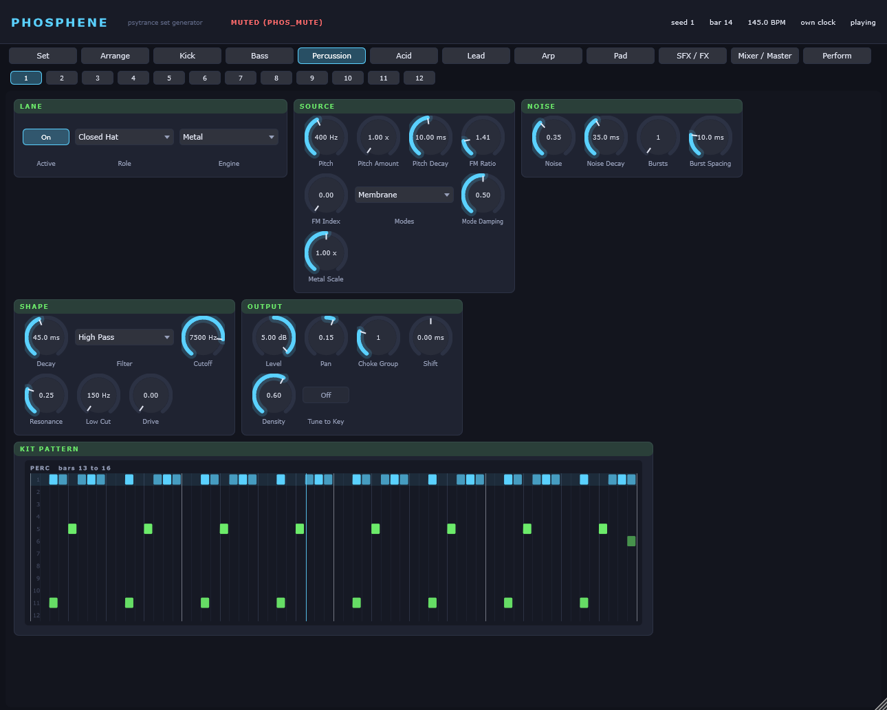
The 12 lanes of the kit share one table; lane 1 is printed here and the others are the same controls under the keys perc2.* to perc12.*.
| Control | Key | Range | Default |
|---|---|---|---|
| Active | perc1.active | off / on | on |
| Role | perc1.role | Closed Hat | Open Hat | Ride | Crash | Clap | Snare | Rim | Shaker | Tom | Conga | Zap | Blip | Closed Hat |
| Engine | perc1.engine | Noise | Metal | Modal | Tone | FM | Metal |
| Control | Key | Range | Default |
|---|---|---|---|
| Pitch | perc1.pitch | 40 .. 12000 Hz | 400 |
| Pitch Amount | perc1.pitch_amount | 1 .. 16 x | 1 |
| Pitch Decay | perc1.pitch_decay | 0.5 .. 300 ms | 10 |
| FM Ratio | perc1.fm_ratio | 0.25 .. 8 | 1.41 |
| FM Index | perc1.fm_index | 0 .. 8 | 0 |
| Modes | perc1.mode_set | Membrane | Bar | Harmonic | Membrane |
| Mode Damping | perc1.mode_damp | 0 .. 1 | 0.5 |
| Metal Scale | perc1.metal_scale | 0.25 .. 4 x | 1 |
| Control | Key | Range | Default |
|---|---|---|---|
| Noise | perc1.noise | 0 .. 1 | 0.35 |
| Noise Decay | perc1.noise_decay | 2 .. 3000 ms | 35 |
| Bursts | perc1.bursts | 1 .. 6 | 1 |
| Burst Spacing | perc1.burst_spacing | 2 .. 40 ms | 10 |
| Control | Key | Range | Default |
|---|---|---|---|
| Decay | perc1.decay | 2 .. 3000 ms | 45 |
| Filter | perc1.filter | Low Pass | Band Pass | High Pass | High Pass |
| Cutoff | perc1.cutoff | 100 .. 18000 Hz | 7500 |
| Resonance | perc1.resonance | 0 .. 1 | 0.25 |
| Low Cut | perc1.low_cut | 150 .. 4000 Hz | 150 |
| Drive | perc1.drive | 0 .. 1 | 0 |
| Control | Key | Range | Default |
|---|---|---|---|
| Level | perc1.level | -36 .. 6 dB | 5 |
| Pan | perc1.pan | -1 .. 1 | 0.15 |
| Choke Group | perc1.choke | 0 .. 4 | 1 |
| Shift | perc1.shift | -10 .. 10 ms | 0 |
| Density | perc1.density | 0 .. 1 | 0.6 |
| Tune to Key | perc1.tune | off / on | off |
A diode ladder after Zavalishin, solved from the inside out, with an accent that charges a sweep capacitor the way the original did -- three accents in a row open further than one. Slide is an exponential glide into the next note, Squelch a cutoff start value plus a comb tuned to the note's period. The tempo delay is in beats, so it follows the set.
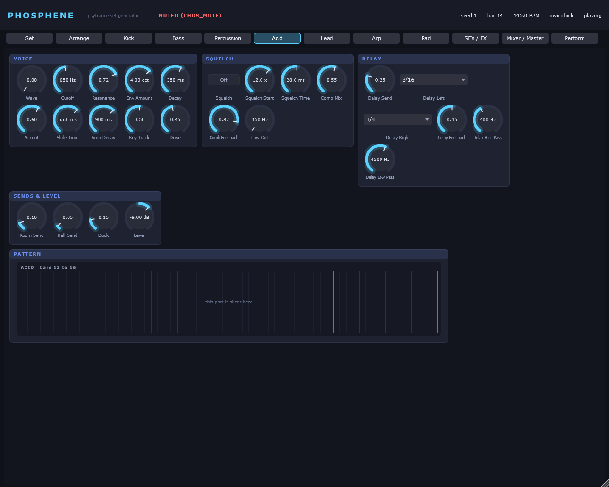
| Control | Key | Range | Default |
|---|---|---|---|
| Wave | acid.wave | 0 .. 1 | 0 |
| Cutoff | acid.cutoff | 80 .. 8000 Hz | 650 |
| Resonance | acid.resonance | 0 .. 1 | 0.72 |
| Env Amount | acid.env_amount | 0 .. 6 oct | 4 |
| Decay | acid.decay | 30 .. 2000 ms | 350 |
| Accent | acid.accent | 0 .. 1 | 0.6 |
| Slide Time | acid.slide_time | 5 .. 200 ms | 55 |
| Amp Decay | acid.amp_decay | 50 .. 4000 ms | 900 |
| Key Track | acid.key_track | 0 .. 1 | 0.5 |
| Drive | acid.drive | 0 .. 1 | 0.45 |
| Control | Key | Range | Default |
|---|---|---|---|
| Squelch | acid.squelch | off / on | off |
| Squelch Start | acid.squelch_start | 2 .. 32 x | 12 |
| Squelch Time | acid.squelch_time | 5 .. 150 ms | 28 |
| Comb Mix | acid.comb_mix | 0 .. 1 | 0.55 |
| Comb Feedback | acid.comb_feedback | 0 .. 0.97 | 0.82 |
| Low Cut | acid.low_cut | 150 .. 1000 Hz | 150 |
| Control | Key | Range | Default |
|---|---|---|---|
| Delay Send | acid.delay_send | 0 .. 1 | 0.25 |
| Delay Left | acid.delay_left | 1/16 | 1/8 | 3/16 | 1/4 | 3/8 | 1/2 | 3/16 |
| Delay Right | acid.delay_right | 1/16 | 1/8 | 3/16 | 1/4 | 3/8 | 1/2 | 1/4 |
| Delay Feedback | acid.delay_feedback | 0 .. 0.9 | 0.45 |
| Delay High Pass | acid.delay_high_pass | 150 .. 2000 Hz | 400 |
| Delay Low Pass | acid.delay_low_pass | 800 .. 16000 Hz | 4500 |
| Control | Key | Range | Default |
|---|---|---|---|
| Room Send | acid.room_send | 0 .. 1 | 0.1 |
| Hall Send | acid.hall_send | 0 .. 1 | 0.05 |
| Duck | acid.duck | 0 .. 1 | 0.15 |
| Level | acid.level | -36 .. 6 dB | -9 |
A supersaw after Szabo's measurements of the JP-8000 -- the detune curve, the mix law and the random phase per note -- with a dynamic detune that follows the length of the note. The other three oscillator types are a virtual-analogue saw and pulse, two-operator FM and a wavetable.
Everything but the kick and the bass is high-passed at its own fundamental, which is what keeps eight voices of supersaw out of the bass register.
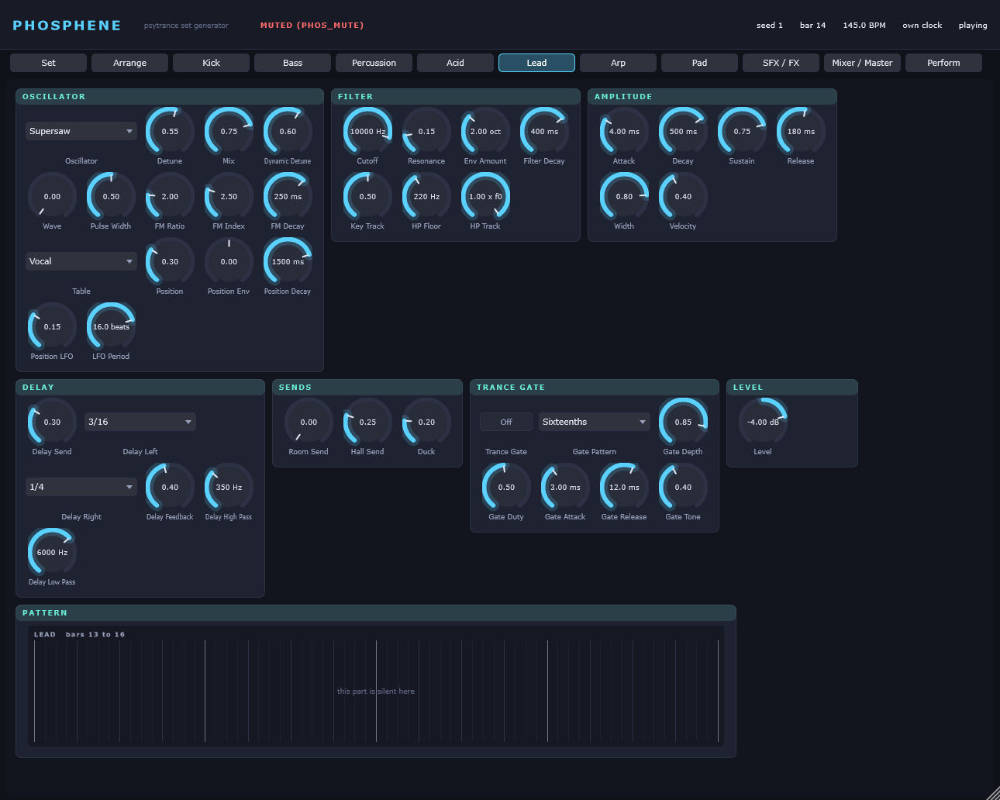
| Control | Key | Range | Default |
|---|---|---|---|
| Oscillator | lead.osc | Supersaw | VA | FM | Wavetable | Supersaw |
| Detune | lead.detune | 0 .. 1 | 0.55 |
| Mix | lead.mix | 0 .. 1 | 0.75 |
| Dynamic Detune | lead.dynamic_detune | 0 .. 1 | 0.6 |
| Wave | lead.wave | 0 .. 1 | 0 |
| Pulse Width | lead.pulse_width | 0.05 .. 0.95 | 0.5 |
| FM Ratio | lead.fm_ratio | 0.5 .. 8 | 2 |
| FM Index | lead.fm_index | 0 .. 10 | 2.5 |
| FM Decay | lead.fm_decay | 5 .. 2000 ms | 250 |
| Table | lead.table | Classic | Vocal | Glass | PWM | Sync | Formant Saw | Vocal |
| Position | lead.position | 0 .. 1 | 0.3 |
| Position Env | lead.pos_env | -1 .. 1 | 0 |
| Position Decay | lead.pos_decay | 10 .. 8000 ms | 1500 |
| Position LFO | lead.pos_lfo_depth | 0 .. 0.5 | 0.15 |
| LFO Period | lead.pos_lfo_beats | 0.25 .. 64 beats | 16 |
| Control | Key | Range | Default |
|---|---|---|---|
| Cutoff | lead.cutoff | 200 .. 18000 Hz | 10000 |
| Resonance | lead.resonance | 0 .. 1 | 0.15 |
| Env Amount | lead.env_amount | 0 .. 6 oct | 2 |
| Filter Decay | lead.filter_decay | 5 .. 3000 ms | 400 |
| Key Track | lead.key_track | 0 .. 1 | 0.5 |
| HP Floor | lead.hp_floor | 150 .. 400 Hz | 220 |
| HP Track | lead.hp_track | 0 .. 1 x f0 | 1 |
| Control | Key | Range | Default |
|---|---|---|---|
| Attack | lead.amp_attack | 0.3 .. 2000 ms | 4 |
| Decay | lead.amp_decay | 5 .. 4000 ms | 500 |
| Sustain | lead.amp_sustain | 0 .. 1 | 0.75 |
| Release | lead.amp_release | 5 .. 4000 ms | 180 |
| Width | lead.width | 0 .. 1 | 0.8 |
| Velocity | lead.vel_sens | 0 .. 1 | 0.4 |
| Control | Key | Range | Default |
|---|---|---|---|
| Delay Send | lead.delay_send | 0 .. 1 | 0.3 |
| Delay Left | lead.delay_left | 1/16 | 1/8 | 3/16 | 1/4 | 3/8 | 1/2 | 3/16 |
| Delay Right | lead.delay_right | 1/16 | 1/8 | 3/16 | 1/4 | 3/8 | 1/2 | 1/4 |
| Delay Feedback | lead.delay_feedback | 0 .. 0.9 | 0.4 |
| Delay High Pass | lead.delay_high_pass | 150 .. 2000 Hz | 350 |
| Delay Low Pass | lead.delay_low_pass | 800 .. 16000 Hz | 6000 |
| Control | Key | Range | Default |
|---|---|---|---|
| Room Send | lead.room_send | 0 .. 1 | 0 |
| Hall Send | lead.hall_send | 0 .. 1 | 0.25 |
| Duck | lead.duck | 0 .. 1 | 0.2 |
| Control | Key | Range | Default |
|---|---|---|---|
| Trance Gate | lead.gate | off / on | off |
| Gate Pattern | lead.gate_pattern | Sixteenths | Eighths | Rolling | Gallop | 3-3-2 | Triplets | Sixteenths |
| Gate Depth | lead.gate_depth | 0 .. 1 | 0.85 |
| Gate Duty | lead.gate_duty | 0.05 .. 1 | 0.5 |
| Gate Attack | lead.gate_attack | 0.5 .. 60 ms | 3 |
| Gate Release | lead.gate_release | 0.5 .. 120 ms | 12 |
| Gate Tone | lead.gate_tone | 0 .. 1 | 0.4 |
| Control | Key | Range | Default |
|---|---|---|---|
| Level | lead.level | -36 .. 6 dB | -4 |
The same engine as the lead, with its own knobs. The arpeggio runs on chord tones, and when its pitch range would overlap the lead's by more than two semitones it is octaved away: two voices playing in the same two octaves mask each other, and the composer checks that before it writes the notes.
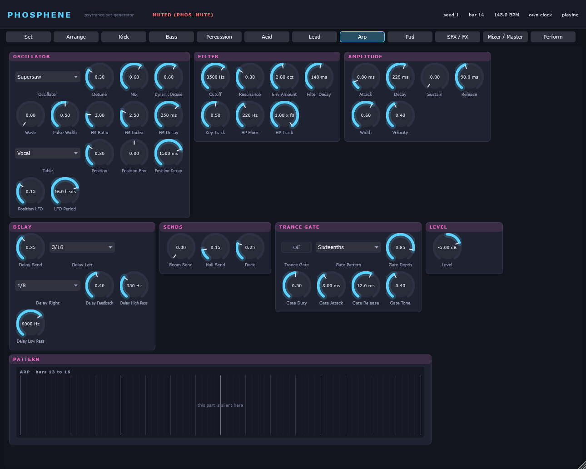
| Control | Key | Range | Default |
|---|---|---|---|
| Oscillator | arp.osc | Supersaw | VA | FM | Wavetable | Supersaw |
| Detune | arp.detune | 0 .. 1 | 0.3 |
| Mix | arp.mix | 0 .. 1 | 0.6 |
| Dynamic Detune | arp.dynamic_detune | 0 .. 1 | 0.6 |
| Wave | arp.wave | 0 .. 1 | 0 |
| Pulse Width | arp.pulse_width | 0.05 .. 0.95 | 0.5 |
| FM Ratio | arp.fm_ratio | 0.5 .. 8 | 2 |
| FM Index | arp.fm_index | 0 .. 10 | 2.5 |
| FM Decay | arp.fm_decay | 5 .. 2000 ms | 250 |
| Table | arp.table | Classic | Vocal | Glass | PWM | Sync | Formant Saw | Vocal |
| Position | arp.position | 0 .. 1 | 0.3 |
| Position Env | arp.pos_env | -1 .. 1 | 0 |
| Position Decay | arp.pos_decay | 10 .. 8000 ms | 1500 |
| Position LFO | arp.pos_lfo_depth | 0 .. 0.5 | 0.15 |
| LFO Period | arp.pos_lfo_beats | 0.25 .. 64 beats | 16 |
| Control | Key | Range | Default |
|---|---|---|---|
| Cutoff | arp.cutoff | 200 .. 18000 Hz | 3500 |
| Resonance | arp.resonance | 0 .. 1 | 0.3 |
| Env Amount | arp.env_amount | 0 .. 6 oct | 2.8 |
| Filter Decay | arp.filter_decay | 5 .. 3000 ms | 140 |
| Key Track | arp.key_track | 0 .. 1 | 0.5 |
| HP Floor | arp.hp_floor | 150 .. 400 Hz | 220 |
| HP Track | arp.hp_track | 0 .. 1 x f0 | 1 |
| Control | Key | Range | Default |
|---|---|---|---|
| Attack | arp.amp_attack | 0.3 .. 2000 ms | 0.8 |
| Decay | arp.amp_decay | 5 .. 4000 ms | 220 |
| Sustain | arp.amp_sustain | 0 .. 1 | 0 |
| Release | arp.amp_release | 5 .. 4000 ms | 90 |
| Width | arp.width | 0 .. 1 | 0.6 |
| Velocity | arp.vel_sens | 0 .. 1 | 0.4 |
| Control | Key | Range | Default |
|---|---|---|---|
| Delay Send | arp.delay_send | 0 .. 1 | 0.35 |
| Delay Left | arp.delay_left | 1/16 | 1/8 | 3/16 | 1/4 | 3/8 | 1/2 | 3/16 |
| Delay Right | arp.delay_right | 1/16 | 1/8 | 3/16 | 1/4 | 3/8 | 1/2 | 1/8 |
| Delay Feedback | arp.delay_feedback | 0 .. 0.9 | 0.4 |
| Delay High Pass | arp.delay_high_pass | 150 .. 2000 Hz | 350 |
| Delay Low Pass | arp.delay_low_pass | 800 .. 16000 Hz | 6000 |
| Control | Key | Range | Default |
|---|---|---|---|
| Room Send | arp.room_send | 0 .. 1 | 0 |
| Hall Send | arp.hall_send | 0 .. 1 | 0.15 |
| Duck | arp.duck | 0 .. 1 | 0.25 |
| Control | Key | Range | Default |
|---|---|---|---|
| Trance Gate | arp.gate | off / on | off |
| Gate Pattern | arp.gate_pattern | Sixteenths | Eighths | Rolling | Gallop | 3-3-2 | Triplets | Sixteenths |
| Gate Depth | arp.gate_depth | 0 .. 1 | 0.85 |
| Gate Duty | arp.gate_duty | 0.05 .. 1 | 0.5 |
| Gate Attack | arp.gate_attack | 0.5 .. 60 ms | 3 |
| Gate Release | arp.gate_release | 0.5 .. 120 ms | 12 |
| Gate Tone | arp.gate_tone | 0 .. 1 | 0.4 |
| Control | Key | Range | Default |
|---|---|---|---|
| Level | arp.level | -36 .. 6 dB | -5 |
Four-voice voicings with the smallest voice movement between chords, through the wavetable engine. The pads carry the blocks that have no lead and no acid, and the trance gate gives them their movement.
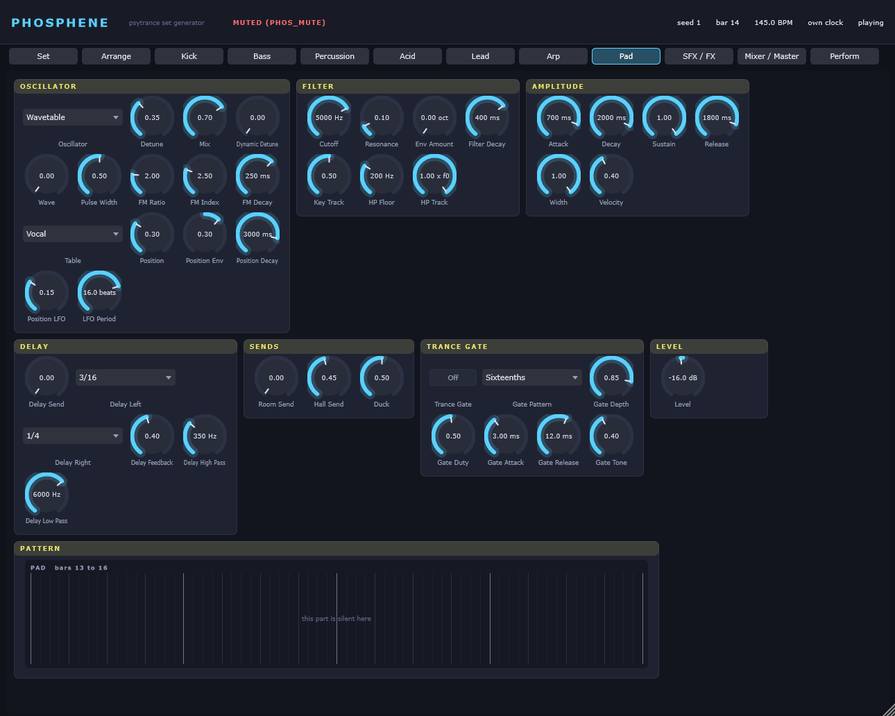
| Control | Key | Range | Default |
|---|---|---|---|
| Oscillator | pad.osc | Supersaw | VA | FM | Wavetable | Wavetable |
| Detune | pad.detune | 0 .. 1 | 0.35 |
| Mix | pad.mix | 0 .. 1 | 0.7 |
| Dynamic Detune | pad.dynamic_detune | 0 .. 1 | 0 |
| Wave | pad.wave | 0 .. 1 | 0 |
| Pulse Width | pad.pulse_width | 0.05 .. 0.95 | 0.5 |
| FM Ratio | pad.fm_ratio | 0.5 .. 8 | 2 |
| FM Index | pad.fm_index | 0 .. 10 | 2.5 |
| FM Decay | pad.fm_decay | 5 .. 2000 ms | 250 |
| Table | pad.table | Classic | Vocal | Glass | PWM | Sync | Formant Saw | Vocal |
| Position | pad.position | 0 .. 1 | 0.3 |
| Position Env | pad.pos_env | -1 .. 1 | 0.3 |
| Position Decay | pad.pos_decay | 10 .. 8000 ms | 3000 |
| Position LFO | pad.pos_lfo_depth | 0 .. 0.5 | 0.15 |
| LFO Period | pad.pos_lfo_beats | 0.25 .. 64 beats | 16 |
| Control | Key | Range | Default |
|---|---|---|---|
| Cutoff | pad.cutoff | 200 .. 18000 Hz | 5000 |
| Resonance | pad.resonance | 0 .. 1 | 0.1 |
| Env Amount | pad.env_amount | 0 .. 6 oct | 0 |
| Filter Decay | pad.filter_decay | 5 .. 3000 ms | 400 |
| Key Track | pad.key_track | 0 .. 1 | 0.5 |
| HP Floor | pad.hp_floor | 150 .. 400 Hz | 200 |
| HP Track | pad.hp_track | 0 .. 1 x f0 | 1 |
| Control | Key | Range | Default |
|---|---|---|---|
| Attack | pad.amp_attack | 0.3 .. 2000 ms | 700 |
| Decay | pad.amp_decay | 5 .. 4000 ms | 2000 |
| Sustain | pad.amp_sustain | 0 .. 1 | 1 |
| Release | pad.amp_release | 5 .. 4000 ms | 1800 |
| Width | pad.width | 0 .. 1 | 1 |
| Velocity | pad.vel_sens | 0 .. 1 | 0.4 |
| Control | Key | Range | Default |
|---|---|---|---|
| Delay Send | pad.delay_send | 0 .. 1 | 0 |
| Delay Left | pad.delay_left | 1/16 | 1/8 | 3/16 | 1/4 | 3/8 | 1/2 | 3/16 |
| Delay Right | pad.delay_right | 1/16 | 1/8 | 3/16 | 1/4 | 3/8 | 1/2 | 1/4 |
| Delay Feedback | pad.delay_feedback | 0 .. 0.9 | 0.4 |
| Delay High Pass | pad.delay_high_pass | 150 .. 2000 Hz | 350 |
| Delay Low Pass | pad.delay_low_pass | 800 .. 16000 Hz | 6000 |
| Control | Key | Range | Default |
|---|---|---|---|
| Room Send | pad.room_send | 0 .. 1 | 0 |
| Hall Send | pad.hall_send | 0 .. 1 | 0.45 |
| Duck | pad.duck | 0 .. 1 | 0.5 |
| Control | Key | Range | Default |
|---|---|---|---|
| Trance Gate | pad.gate | off / on | off |
| Gate Pattern | pad.gate_pattern | Sixteenths | Eighths | Rolling | Gallop | 3-3-2 | Triplets | Sixteenths |
| Gate Depth | pad.gate_depth | 0 .. 1 | 0.85 |
| Gate Duty | pad.gate_duty | 0.05 .. 1 | 0.5 |
| Gate Attack | pad.gate_attack | 0.5 .. 60 ms | 3 |
| Gate Release | pad.gate_release | 0.5 .. 120 ms | 12 |
| Gate Tone | pad.gate_tone | 0 .. 1 | 0.4 |
| Control | Key | Range | Default |
|---|---|---|---|
| Level | pad.level | -36 .. 6 dB | -16 |
The effect generator makes risers, downlifters, impacts, sweeps, formant shots, reverse swells and zaps; the composer places them at the form's boundaries -- a riser over the last eight bars of a buildup, ending exactly on the drop, the formant shot on the last beat of the pre-drop break, a descending sweep into the drop.
The two send effects are a short room and a long hall, both feedback delay networks. Their returns are ducked with the kick like everything else, and high-passed: a reverb tail in the bass register is mud.
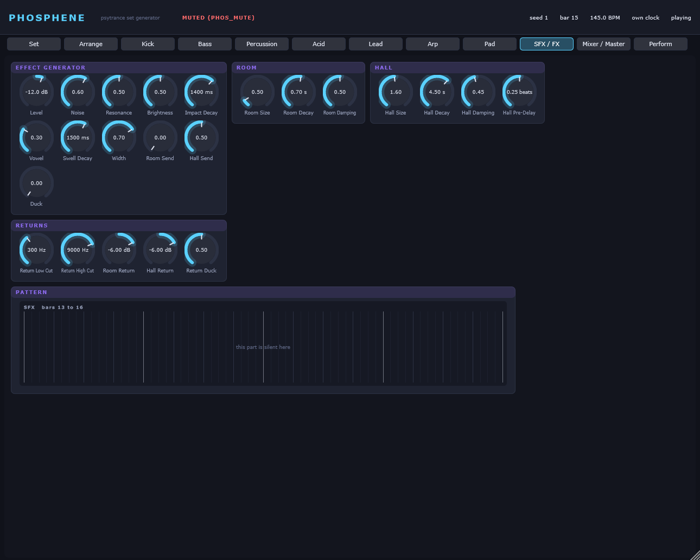
| Control | Key | Range | Default |
|---|---|---|---|
| Level | sfx.level | -36 .. 6 dB | -12 |
| Noise | sfx.noise | 0 .. 1 | 0.6 |
| Resonance | sfx.resonance | 0 .. 1 | 0.5 |
| Brightness | sfx.brightness | 0 .. 1 | 0.5 |
| Impact Decay | sfx.impact_decay | 200 .. 4000 ms | 1400 |
| Vowel | sfx.vowel | 0 .. 1 | 0.3 |
| Swell Decay | sfx.swell_decay | 200 .. 6000 ms | 1500 |
| Width | sfx.width | 0 .. 1 | 0.7 |
| Room Send | sfx.room_send | 0 .. 1 | 0 |
| Hall Send | sfx.hall_send | 0 .. 1 | 0.5 |
| Duck | sfx.duck | 0 .. 1 | 0 |
| Control | Key | Range | Default |
|---|---|---|---|
| Room Size | fx.room_size | 0.3 .. 3 | 0.5 |
| Room Decay | fx.room_decay | 0.1 .. 4 s | 0.7 |
| Room Damping | fx.room_damping | 0 .. 1 | 0.5 |
| Control | Key | Range | Default |
|---|---|---|---|
| Hall Size | fx.hall_size | 0.3 .. 3 | 1.6 |
| Hall Decay | fx.hall_decay | 0.3 .. 20 s | 4.5 |
| Hall Damping | fx.hall_damping | 0 .. 1 | 0.45 |
| Hall Pre-Delay | fx.hall_pre_delay | 0 .. 0.5 beats | 0.25 |
| Control | Key | Range | Default |
|---|---|---|---|
| Return Low Cut | fx.low_cut | 150 .. 1000 Hz | 300 |
| Return High Cut | fx.high_cut | 1000 .. 20000 Hz | 9000 |
| Room Return | fx.room_return | -36 .. 6 dB | -6 |
| Hall Return | fx.hall_return | -36 .. 6 dB | -6 |
| Return Duck | fx.return_duck | 0 .. 1 | 0.5 |
Level, mute and sends per part, the sidechain matrix, and the master chain: bus compressor, mono bass, a two-times oversampled knee clipper, a lookahead true-peak limiter and a safety clip, metered to ITU-R BS.1770.
Auto Gain renders four four-bar windows of the track through the whole master chain, measures them and offsets the master gain so that the output meets the loudness target. It runs when a track is planned, so it uses the knobs as they stand at that moment.
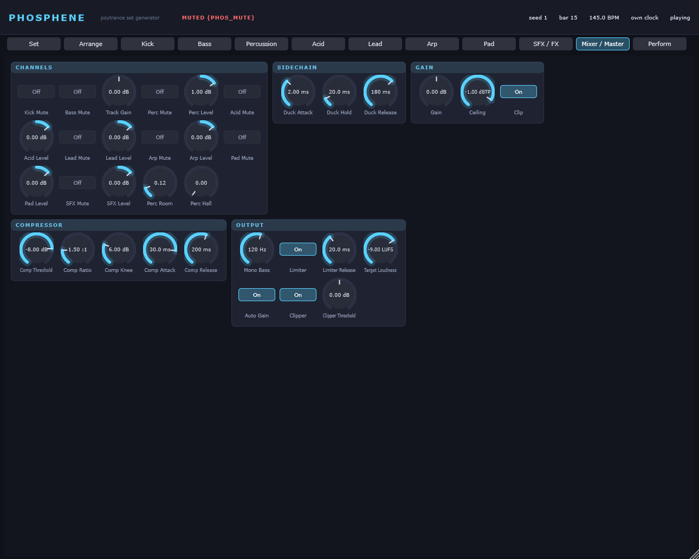
| Control | Key | Range | Default |
|---|---|---|---|
| Kick Mute | mix.kick_mute | off / on | off |
| Bass Mute | mix.bass_mute | off / on | off |
| Track Gain | mix.track_gain | -12 .. 12 dB | 0 |
| Perc Mute | mix.perc_mute | off / on | off |
| Perc Level | mix.perc_level | -24 .. 12 dB | 1 |
| Acid Mute | mix.acid_mute | off / on | off |
| Acid Level | mix.acid_level | -24 .. 12 dB | 0 |
| Lead Mute | mix.lead_mute | off / on | off |
| Lead Level | mix.lead_level | -24 .. 12 dB | 0 |
| Arp Mute | mix.arp_mute | off / on | off |
| Arp Level | mix.arp_level | -24 .. 12 dB | 0 |
| Pad Mute | mix.pad_mute | off / on | off |
| Pad Level | mix.pad_level | -24 .. 12 dB | 0 |
| SFX Mute | mix.sfx_mute | off / on | off |
| SFX Level | mix.sfx_level | -24 .. 12 dB | 0 |
| Perc Room | mix.perc_room | 0 .. 1 | 0.12 |
| Perc Hall | mix.perc_hall | 0 .. 1 | 0 |
| Control | Key | Range | Default |
|---|---|---|---|
| Duck Attack | mix.duck_attack | 0.5 .. 30 ms | 2 |
| Duck Hold | mix.duck_hold | 0 .. 200 ms | 20 |
| Duck Release | mix.duck_release | 10 .. 800 ms | 180 |
| Control | Key | Range | Default |
|---|---|---|---|
| Gain | master.gain | -24 .. 24 dB | 0 |
| Ceiling | master.ceiling | -12 .. 0 dBTP | -1 |
| Clip | master.clip | off / on | on |
| Control | Key | Range | Default |
|---|---|---|---|
| Comp Threshold | master.comp_threshold | -40 .. 0 dB | -8 |
| Comp Ratio | master.comp_ratio | 1 .. 10 :1 | 1.5 |
| Comp Knee | master.comp_knee | 0 .. 24 dB | 6 |
| Comp Attack | master.comp_attack | 0.1 .. 100 ms | 30 |
| Comp Release | master.comp_release | 10 .. 2000 ms | 200 |
| Control | Key | Range | Default |
|---|---|---|---|
| Mono Bass | master.mono_bass | 40 .. 300 Hz | 120 |
| Limiter | master.limiter | off / on | on |
| Limiter Release | master.limiter_release | 2 .. 1000 ms | 20 |
| Target Loudness | master.target_lufs | -20 .. -4 LUFS | -9 |
| Auto Gain | master.auto_gain | off / on | on |
| Clipper | master.clipper | off / on | on |
| Clipper Threshold | master.clipper_threshold | -6 .. 6 dB | 0 |
Four macros, meant for a hand rather than a mouse.
They are immediate parameter moves rather than score events, and that is measured rather than convenient: the engine's control ring is first in, first out and the composer keeps it filled eight bars ahead, so an event pushed into it now would not be heard for about thirteen seconds. A macro therefore writes the knob itself, as an offset in the knob's normalised domain, and puts it back exactly where it was when you let go. The composer's own ramps keep riding on top.
Drop-out is a press, not a hold: it takes the kick and the bass out and lets them back in on the next bar line. Stutter is held. Filter Sweep and Gate Depth stay where you leave them, and a double click puts them back to neutral.
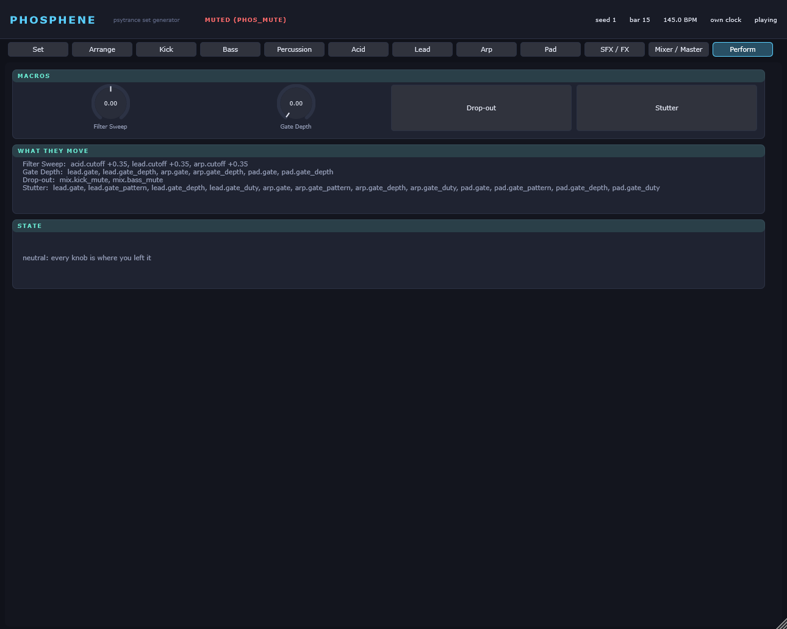
Opens or closes the acid, lead and arp filters together, by up to a third of their range in each direction. Centre is neutral.
Moves: acid.cutoff +0.35, lead.cutoff +0.35, arp.cutoff +0.35
Switches the trance gate on for lead, arp and pad and sets its depth; at 1.0 the gate closes completely between its steps.
Moves: lead.gate = 1, lead.gate_depth = 1, arp.gate = 1, arp.gate_depth = 1, pad.gate = 1, pad.gate_depth = 1
Takes kick and bass out until the next bar line and lets them back in on the downbeat. One press, one bar.
Moves: mix.kick_mute = 1, mix.bass_mute = 1
Held: lead, arp and pad run through the gate on sixteenths at full depth and the shortest duty. Phosphene has no buffer repeat, so this is the gate's stutter, not a tape one.
Moves: lead.gate = 1, lead.gate_pattern = 0, lead.gate_depth = 1, lead.gate_duty = 0, arp.gate = 1, arp.gate_pattern = 0, arp.gate_depth = 1, arp.gate_duty = 0, pad.gate = 1, pad.gate_pattern = 0, pad.gate_depth = 1, pad.gate_duty = 0